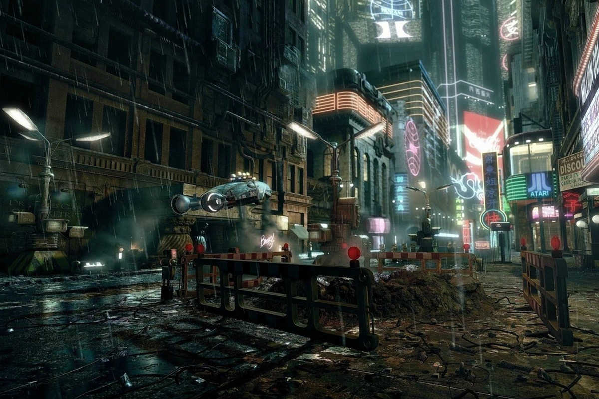

Som a l'any 2042.
La crisi econòmica i social que va començar a principi de la dècada ha estat un pou sense fons per la humanitat.
Avui en dia la gent només conviu en un videojoc de realitat virtual anomenat O A S I S. En ell la gent hi desenvolupa la seva principal vida. Fora d'ella, la vida real és una Segona Vida.
Un grup de hackers rebels d'O A S I S anomenats Gunters acaben de descobrir una antiga xarxa de comunicació global anomenada Internet. Sembla ser que hi ha un servidor clandestí on s'emmagatzema bona part del coneixement que la raça humana havia compendiat en aquesta primitiva xarxa.
L'interacció amb l'usuari era a través de text, d'imatges, vídeos i sons. Gairebé no hi havia realitat virtual!
Gunters estan disposats a començar una perillosa missió
per trobar una causa de la crisi de valors i informació que van portar
a la quasi destrucció del món de principis de segle XXI.Es diu que fins i tot és possible que en aquesta cerca acabin trobant el perquè els humans els agradava més la segona vida que la realitat virtual. Tot són especulacions...
El primer és saber què feien aquella època, com es comunicaven, com creaven com compartien... en definitiva, investigar el que els primitius anomenaven Aplicacions Web.